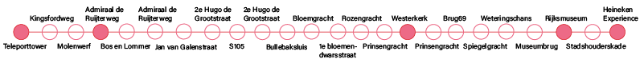
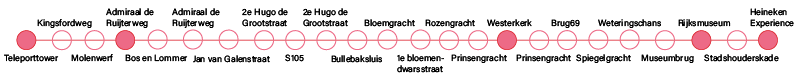
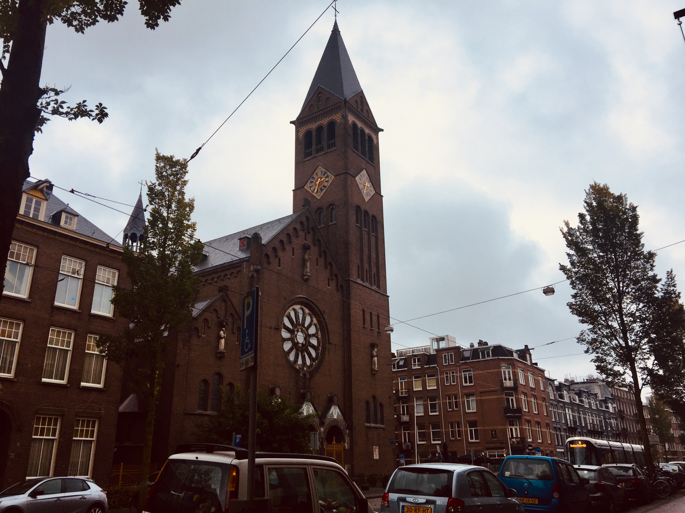
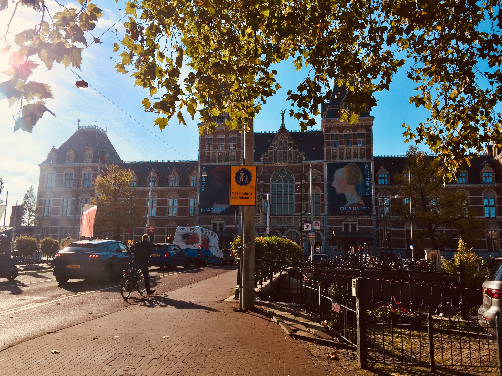

Long routes
Architour
Time 1 hour and 30 minutes
Distance 6,2 km


Time 1 hour and 30 minutes
Distance 6,2 km
The teleport neigborhood was build in 1984 as a buzinesspark. In 2000 the teleport tower was build. It has 17 floors and that makes a height of 65 meter. It was build by Imca Vastgoed and architectural firm Alberts & van Huut. The striking colors is how the building stands out from the rest.

The 'boomkerk' actually called the Rooms-katholieke kerk van Sint-Franciscus van Assisi. In 1771 the church was expanded to het Rokin and replaced by a bigger building. The 3 bell gables were added in 1843-1844 commissioned by the pastor Johannes Franciscus Aalders. The design is from Martinus Gerardus Tétar van Elven. in 1910 the church was closed and short after taken down. The new church was build on the Admiraal de Ruijterweg. The church and rectory were designed by P.J. bekkers.
The church is build between 1620 and 1631 in the renaissance style after the designs of Hendrick de Keyser. It was finished under supervision of his son, Pieter de keyser. in 1631 is went into use. The church has a length of 58 meter and a height of 29 meter. The wester tower is one of the highest churchtowers of Amsterdam, around 87 meter high is the tower. On match 10 in 1966 was the wedding of prinses Beatrix and Claus von Amsberg.

The Rijksmuseum is since 1885 settled in the museum building. This building is designed by Pierre Cuypers. On july 12th 1876 the premition to build had been given to Cuypers. In 1877 the build of Rijksmuseum started. As funding there are 8000 wooden pillars used. And around 8.400.000 bricks. Eventually the costs for the main building came to 2,7 million gulden. In 1885 was the official opening of the museum.
This is museum of the Dutch beer brand Heineken. This is established in the old brewery of Heineken. The architect was I. Gosschalk In 1867 the building started, as the first brewery of Heineken. And it was this until 1988.